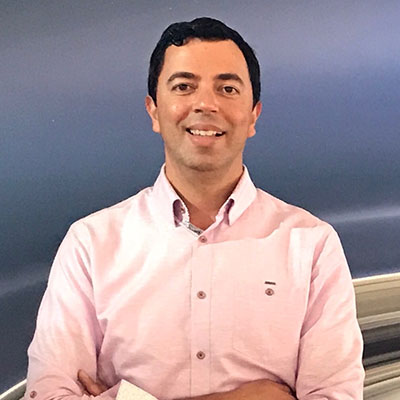

KAMAL OUDGHIRI
 BIOGRAPHY
EXPERIENCE PROFESSIONNEL
LES COMPETENCE

BIOGRAPHY
- Date of birth: 1968
- Place of birth: Fez
Engineer graduated frome École centrale Paris est aujourd'hui l'un des chercheurs
les plus éminents de l'agence spatiale américaine Nasa,
titulaire de plus de quarante prix d'excellence, faisant de lui l'une des personnes les plus distinguées
de la nasa née à 20 coderes.
EXPERIENCE
PROFESSIONNEL
Ingénieur diplômé de l'École centrale Paris, Khalid Oudghiri entame sa carrière
au Maroc au sein de l'Office national de recherches et d'exploitations pétrolières
(l'actuel Office national des hydrocarbures et des mines). Responsable du développement dans cette institution,
il poursuit simultanément sa formation à l'Institut français du pétrole,
ce qui lui permettra, entre 1983 à 1986, de diriger le projet
de développement du champ de gaz naturel de Meskala
LES COMPETENCE
- En 1987 il intègre la Compagnie financière d’investissement, filiale d’Indosuez,
comme directeur des investisseme.Il assure en parallèle de 1988 à 1991 la direction
générale du groupe Bois de l’Atlas racheté par cette banque d’affaires et assure
la fusion des trois sociétés que compte ce groupe.
- En1992, il rejoint le groupe BNP Paribas pour occuper le poste de Directeur
Général Adjoint de la Banque marocaine pour le commerce et l'industrie (BMCI),
filiale marocaine du groupe. Dans cette fonction, il concourt à la restructuration
et au développement de la banque, notamment à l’acquisition de ABN
AMRO Bank Maroc et à sa fusion avec la BMCI en 2001.